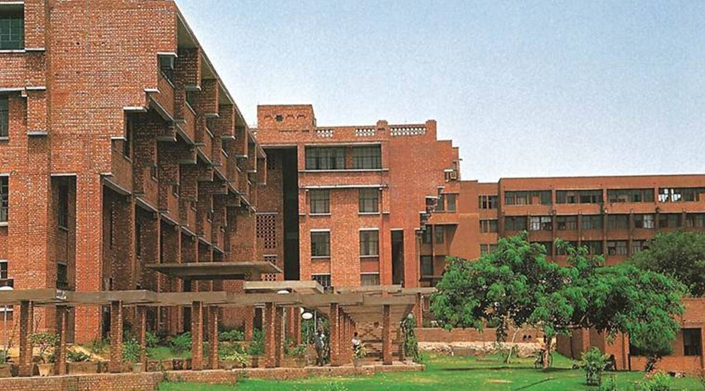
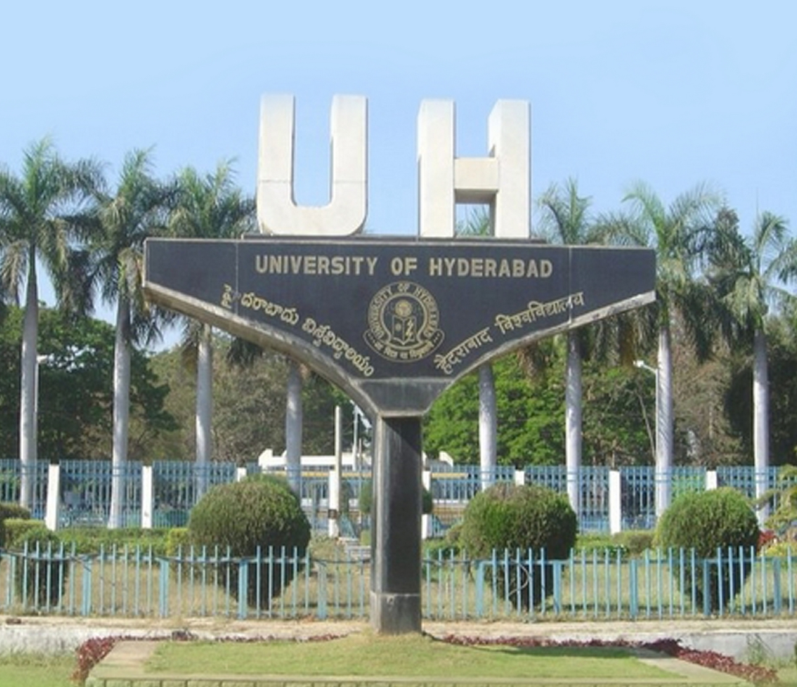

Central universities or union universities in India are public universities established by an Act of Parliament and are under the purview of the Department of Higher Education in the Ministry of Education. In general, universities in India are recognised by the University Grants Commission (UGC), which draws its power from the University Grants Commission Act, 1956. In addition, 15 Professional Councils are established, controlling different aspects of accreditation and coordination. Central universities, in addition, are covered by the Central Universities Act, 2009, which regulates their purpose, powers, governance etc., and established 12 new universities. As of 31 March 2021, The list of central universities published by the UGC includes 54 central universities.
Apart from the above universities, other institutions are granted the permission to autonomously award degrees. These institutes do not affiliate colleges and are not officially called "universities" but "autonomous organisations" or "autonomous institutes". They fall under the administrative control of the Department of Higher Education. These organisations include the Indian Institutes of Technology, the National Institutes of Technology, the Indian Institutes of Science Education and Research, the Indian Institutes of Engineering Science and Technology, the Indian Institutes of Management, the National Law Schools, the All India Institute of Medical Sciences, and other autonomous institutes.
TOP CENTRAL UNIVERSITIES IN INDIA
| S.NO. | TOP CENTRAL UNIVERSITIES | STATE | CITY | NIRF RANKING |
|---|---|---|---|---|
| 1 | IISC BANGALORE | KARNATAKA | BANGALORE | 1 |
| 2 | JAWAHARLAL NEHRU | NEW DELHI | DELHI | 3 |
| 3 | UNIVERSITY OF HYDERABAD | TELANGANA | HYDERABAD | 4 |
| 4 | TEZPUR UNIVERSITY | ASSAM | TEZPUR | 5 |
| 5 | BANARAS HINDU UNIVERSITY (BHU) | UTTAR PRADESH | VARANASI | 7 |
JAWAHARLAL NEHRU UNIVERSITY
JNU is a public major research university located in New Delhi, India. It was established in 1969 and named after Jawaharlal Nehru, India's first Prime Minister. The university is known for leading faculties and research emphasis on social sciences and applied sciences.Jawaharlal Nehru University was established in 1969 by an act of parliament. It was named after Jawaharlal Nehru, India's first Prime Minister. G. Parthasarathy was the first vice-chancellor. Prof. Moonis Raza was the Founder Chairman and Rector. The bill for the establishment of Jawaharlal Nehru University was placed in the Rajya Sabha on 1 September 1965 by the then-Minister of Education, M. C. Chagla. During the discussion that followed, Bhushan Gupta, member of parliament, voiced the opinion that this should not be yet another university. New faculties should be created, including scientific socialism, and one thing that this university should ensure was to keep noble ideas in mind and provide accessibility to students from weaker sections of society. The JNU Bill was passed in Lok Sabha on 16 November 1966 and the JNU Act came into force on 22 April 1969. The Indian School of International Studies was merged with the JNU in June 1970.
UNIVERSITY OF DELHI
 Delhi University (DU), formally the University of Delhi, is a central university located in New Delhi, India. It was founded in 1922 by an Act of the Central Legislative Assembly and is recognized as an Institute of Eminence (IoE) by the University Grants Commission (UGC). As a collegiate university, its main functions are divided between the academic departments of the university and constituent colleges. Consisting of three colleges, two faculties, and 750 students at its founding, the University of Delhi has since become India's largest institution of higher learning and among the largest in the world. The university has 16 faculties and 86 departments distributed across its North and South campuses. It has 77 constituent colleges and five other institutes. The Vice President of India serves as the university chancellor.
Delhi University (DU), formally the University of Delhi, is a central university located in New Delhi, India. It was founded in 1922 by an Act of the Central Legislative Assembly and is recognized as an Institute of Eminence (IoE) by the University Grants Commission (UGC). As a collegiate university, its main functions are divided between the academic departments of the university and constituent colleges. Consisting of three colleges, two faculties, and 750 students at its founding, the University of Delhi has since become India's largest institution of higher learning and among the largest in the world. The university has 16 faculties and 86 departments distributed across its North and South campuses. It has 77 constituent colleges and five other institutes. The Vice President of India serves as the university chancellor.
The President of India is the Visitor, the Vice President of India is the Chancellor and the Chief Justice of India is the Pro-Chancellor of the university. The Court, the Executive Council, the Academic Council and the Finance Committee are the administrative authorities of the university.
UNIVERSITY OF HYDERABAD
The University of Hyderabad is a prestigious public central research university located in Hyderabad, Telangana, India. Founded in 1974, the mostly residential campus has more than 5,000 students and 400 faculty, from several disciplines. The governor of the state of Telangana is ex-officio the chief rector of the university, while the President of India is the visitor to the university. The university was established along the lines of the Six-Point Formula of 1973. The first vice-chancellor of the university was Banaras Hindu University organic chemist Gurbaksh Singh, from 1974 to 1979. Shri B D Jatti was the first chancellor of the university. In January 2015, the University of Hyderabad received the Visitor's Award for the Best Central University in India, awarded by the President of India. The university is located in Gachibowli, on 2300-odd acres. The campus is rich in flora and fauna, home to over 734 flower plants, ten species of mammals, 15 species of reptiles, and 220 species of birds. The university is recognized as an Institute of Eminence by the University Grants Commission (UGC) through the UGC (Declaration of Government Institutions as Institutions of Eminence) Guidelines, 2017 for public institutions.